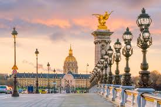

A Golden Sunset: The Elegance of Pont Alexandre III
There's a moment in Paris when the city is truly bathed in magic: it's sunset as seen from the Pont Alexandre III. This is no ordinary crossing; it's a testament to architecture, a place where every detail glistens. I still recall the crisp air and the way the sky, painted in pink and orange, highlighted the gilded sculptures crowning the bridge's pillars. Walking here is like strolling through an open-air art gallery, flanked by rows of incredibly elaborate Art Nouveau lampposts that light up like jewels as evening descends. At the far end, the golden dome of Les Invalides rises majestically, concluding the vista with an imperial magnificence. If you seek the very essence of Parisian elegance, this is your spot. Come here during the golden hour, let the light envelop you, and you'll understand why this bridge is considered the most lavish in the world. It is the perfect postcard from Paris, the City of Love and Light.
Torna a gli articoli